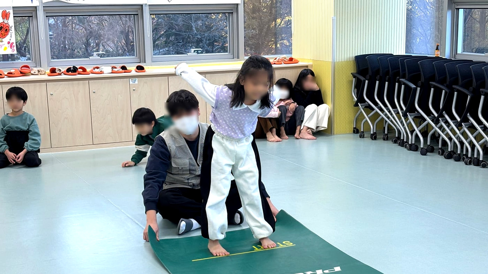
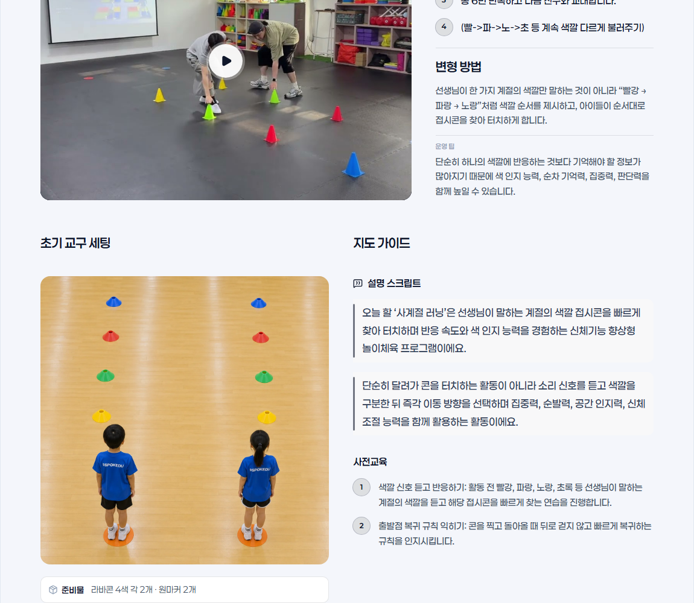
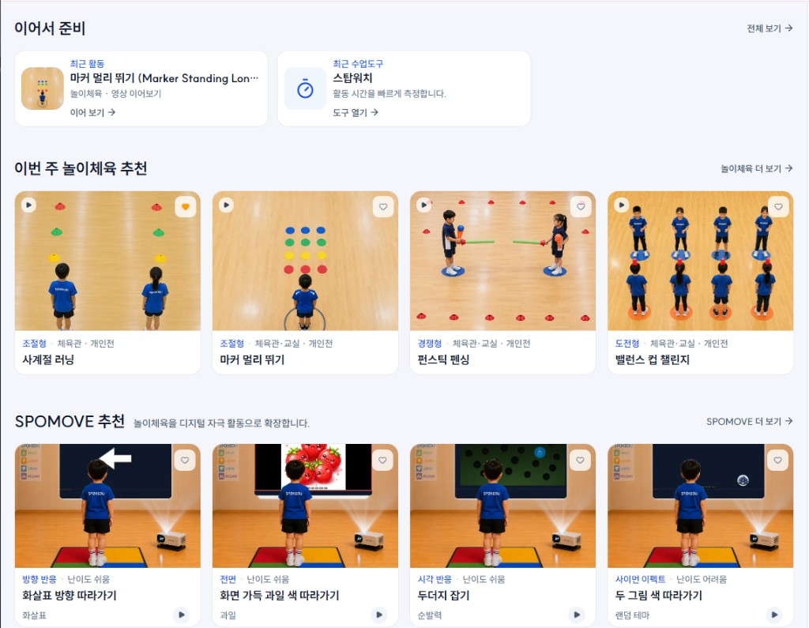
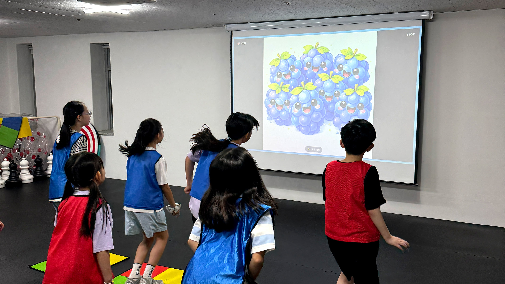
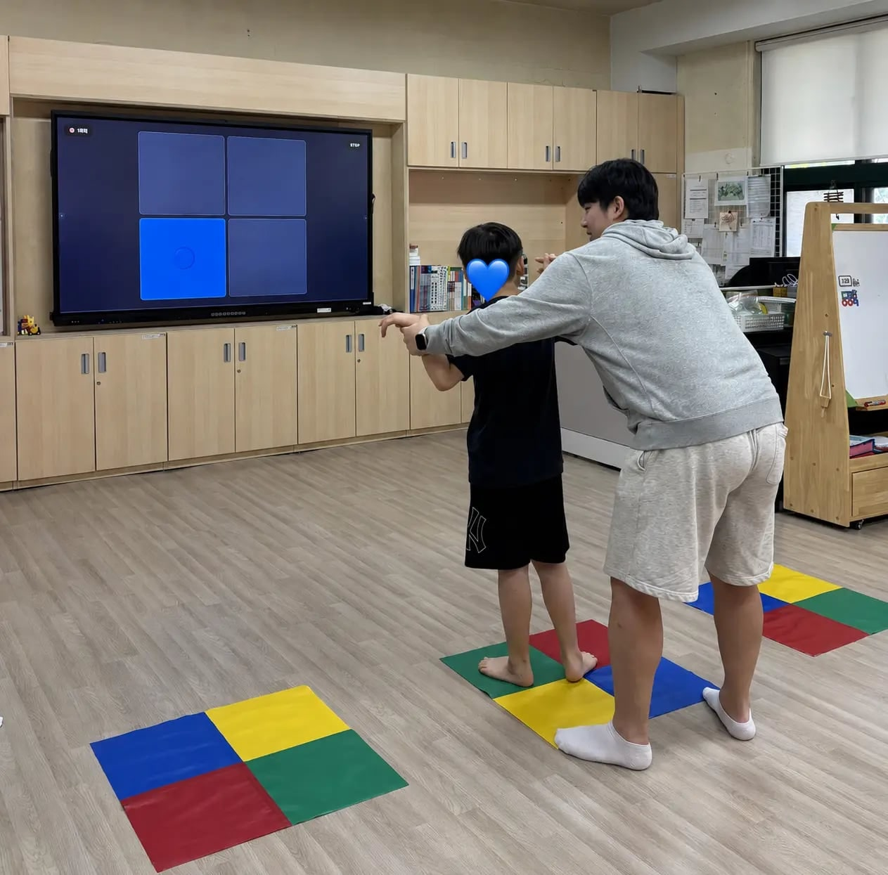
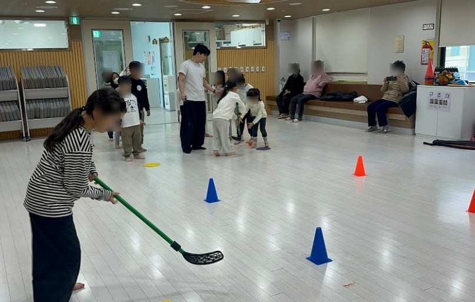

현장

직접 수업합니다.
SPOKEDU
SPOKEDU는 현장의 수업 경험을 바탕으로 필요한 프로그램과 시스템을 직접 만들고, 더 많은 아이들에게 좋은 체육교육이 닿을 수 있도록 확장합니다.

직접 수업합니다.

현장에서 필요한 프로그램을 만듭니다.
모바일: UI 전체 축소 시 내부 글자 가독성 저하 가능
수업을 운영하고 확장할 수 있도록 연결합니다.
Field Records
학교, 기관, 지역사회와 함께한 다양한 수업 사례를 통해 SPOKEDU의 가치를 확인할 수 있습니다.



HOW WE WORK
Field·Content·System은 별도 상품이 아니라, 같은 수업 경험을 확장하기 위한 세 단계입니다.
현장에서 확인한 참여·공간·난이도 조건을 프로그램 설계에 반영하고, SPOKEDU LAB에서 준비·운영·기록까지 이어집니다.
대상·공간·난이도를 보며 수업을 설계·운영합니다. (예: PAPS 연계 정규수업 — 양천거점형키움센터, 카탈로그 verified)
교구 세팅·체크리스트·활동 구성을 수업자료로 정리합니다. SPOMOVE 등 IP는 기관·구독 경로에서 활용됩니다.
반·학생·일정·출석·기록을 한곳에서 관리합니다. 지도자용 구독(SPOKEDU LAB)이 이 단계를 담당합니다.
PROOF · 3 CASES
아래 사례는 운영 사실·과정 기록입니다. 교육 효과 단정은 하지 않습니다.
초등학생 · 스크린 신호 → 선택 → 움직임. 스테이션·난이도 분리(카탈로그 onsite composition, VERIFIED).
사례 요약 → /records/dongjak-spomove
참여·수행 수준에 맞춘 활동 조정(records-landing 설명, VERIFIED).
블로그 후기 → (네이버, PARTIAL onsite)
6개월 종목 순환(클라이밍·피클볼 등, 카탈로그 description VERIFIED).
블로그 후기 →
FIELD FIRST
기관·학교·센터에서 운영한 사례부터 확인한 뒤, SPOKEDU가 현장에서 무엇을 설계·조정했는지 읽을 수 있습니다.
THEN · THE LOOP
위 사례에서 확인한 조건이 프로그램·LAB 운영으로 이어지는 구조입니다. (홈 섹션 순서 변경 아님 — 설명 순서 비교용)
참여·공간·난이도·동선 — 현장에서 확인한 운영 조건
교구·활동·체크리스트를 수업자료로 정리
준비·진행·기록을 지도자 도구로 연결